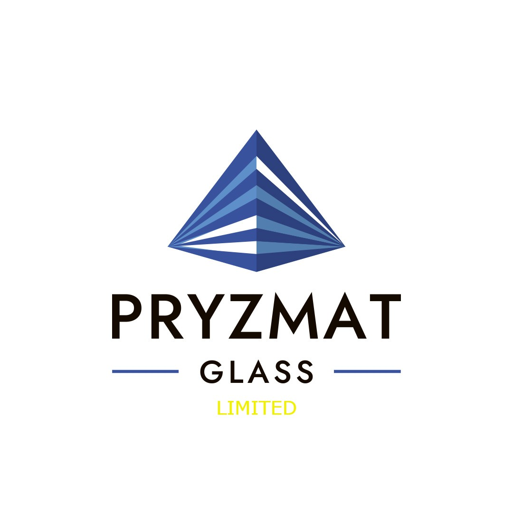

Dojazd ekipy 0 zł
Przy pierwszym myciu okien lub witryn w ramach oferty nie naliczamy opłaty za dojazd. Dodatkowy sprzęt i usługi wyceniamy osobno przed akceptacją.

535 937 367BLACK MONTH • 26 LISTOPADA – 31 GRUDNIA 2026
Zacznij współpracę z Pryzmat Glass w Rzeszowie lub Nowym Sączu. Przy pierwszej realizacji nie płacisz za dojazd ekipy, a przy uzgodnionej obsłudze cyklicznej zachowujesz cenę samego mycia przez cały 2027 rok.
Dla nowych klientów • wartość pierwszej usługi minimum 350 zł netto • promocja dotyczy mycia okien, witryn i przeszkleń.
JAK DZIAŁA BLACK MONTH?
Możesz zamówić pierwsze mycie jednorazowo lub od razu umówić harmonogram na kolejny rok. W obu przypadkach pierwszy dojazd jest bezpłatny; gwarancja ceny na 2027 dotyczy tylko uzgodnionych zleceń cyklicznych.
Przy pierwszym myciu okien lub witryn w ramach oferty nie naliczamy opłaty za dojazd. Dodatkowy sprzęt i usługi wyceniamy osobno przed akceptacją.
Uzgadniamy liczbę wizyt, zakres i stawkę za mycie. Przy niezmienionym obiekcie i zakresie prac nie podnosimy tej stawki do końca 2027 roku.
Oferta obejmuje adresy realizacji w granicach administracyjnych obu miast. Poza nimi przygotujemy indywidualną wycenę na zasadach standardowych.
WARUNKI AKCJI PROMOCYJNEJ
Poniżej znajdziesz warunki, które powinny być uwzględnione w indywidualnej wycenie. Oferta nie oznacza automatycznej rezerwacji terminu ani stałej ceny bez uzgodnienia harmonogramu.
Akcję prowadzi firma usługowa Pryzmat Glass. Zapytania i reklamacje dotyczące promocji: biuro.pryzmatglass@gmail.com, tel. 535 937 367. Pełne dane identyfikujące podmiot zawierający umowę przekazujemy w indywidualnej ofercie przed jej akceptacją.
Od do Należy w tym czasie otrzymać i zaakceptować indywidualną ofertę na piśmie lub e-mailem. Sama wiadomość z zapytaniem nie rezerwuje promocji. Pierwsza realizacja może odbyć się później, w uzgodnionym terminie.
Nowy klient prywatny lub firmowy, który przed rozpoczęciem akcji nie korzystał z odpłatnego mycia okien, witryn lub przeszkleń w Pryzmat Glass i nie ma aktywnej umowy na te usługi. Promocja jest jednorazowa dla danego nowego klienta.
W granicach administracyjnych Rzeszowa i Nowego Sącza. Dotyczy adresu pierwszej realizacji wskazanego w zaakceptowanej ofercie. Dojazdy poza tym obszarem i dodatkowe lokalizacje wyceniamy indywidualnie bez automatycznego bonusu.
Mycie okien, witryn sklepowych i innych przeszkleń. Minimalna wartość samej usługi przy pierwszej realizacji: 350 zł netto (przy VAT 23% odpowiada to 430,50 zł brutto). Pełną cenę brutto i stawkę podatku przedstawimy klientowi indywidualnemu przed zawarciem umowy. Próg nie obejmuje dojazdu, podnośnika, wynajmu sprzętu ani usług dodatkowych.
Opłata za dojazd naszej ekipy do pierwszej realizacji wynosi 0 zł. Bonus przysługuje tylko raz. Od drugiej realizacji koszt dojazdu jest podawany odrębnie w zaakceptowanej ofercie; nie jest objęty gwarancją ceny samego mycia. Dodatkowe koszty sprzętu lub prac wymagają wcześniejszej zgody klienta.
Przysługuje po zaakceptowaniu do 31 grudnia 2026 r. oferty na obsługę cykliczną z ustalonym zakresem, adresem, częstotliwością i ceną mycia za realizację. Uzgodniona cena samego mycia pozostaje bez jednostronnej podwyżki do przy niezmienionych warunkach. Pierwszy dojazd pozostaje darmowy, nawet jeśli pierwsza realizacja nastąpi w 2027 r.
Rozszerzenie powierzchni, liczby okien, lokalizacji lub zakresu usług wymaga osobnej wyceny i akceptacji. Zwykłe sezonowe zabrudzenie przy tym samym zakresie nie jest samo w sobie podstawą do podwyżki ustalonej ceny mycia. Jednorazowe zlecenie nie tworzy automatycznie gwarancji ceny kolejnych niezaplanowanych wizyt.
Termin ustalamy wspólnie. Przy mrozie, oblodzeniu, silnym wietrze lub innych warunkach uniemożliwiających bezpieczne mycie ustalimy nowy termin. Samo przełożenie realizacji z przyczyn pogodowych nie odbiera uzgodnionych korzyści.
Przed rozpoczęciem prac klient otrzymuje potwierdzenie zakresu, ceny mycia, kosztów innych niż pierwszy dojazd, terminu i – jeśli dotyczy – harmonogramu cyklicznego. Promocja nie ogranicza ustawowych praw konsumenta, w tym prawa do odstąpienia od umowy, jeśli ma ono zastosowanie do sposobu zawarcia umowy.
Uwaga: BLACK MONTH nie jest procentową obniżką ceny mycia. Korzyścią jest bezpłatny pierwszy dojazd i gwarancja uzgodnionej ceny usługi w określonym harmonogramie. Ceny i koszty dodatkowe są każdorazowo prezentowane przed zawarciem umowy.
WYCEŃMY TWOJE OKNA
W wiadomości podaj miasto, adres lub dzielnicę, rodzaj obiektu, liczbę okien i informację, czy interesuje Cię mycie jednorazowe czy cykliczne. Dzięki temu przygotujemy konkretną ofertę.